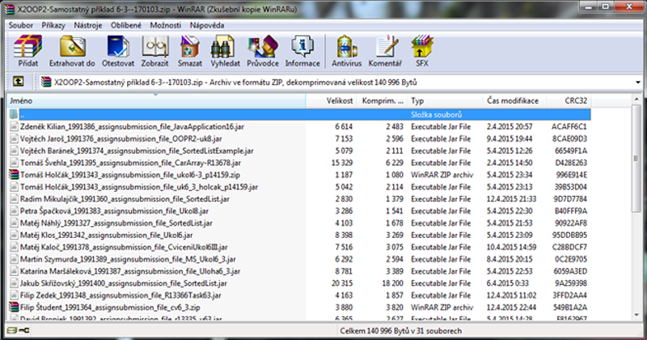
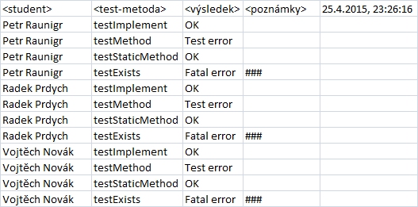
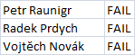

1. Úvod
TestManager se zabývá problematikou automatizovaného ohodnocení úkolů z programování. Jeho hlavní náplní je přijímat 2 vstupy ve formě zip souborů, z nichž 1 dodá učitel a 1 bude výstupem systému Moodle.
- Učitelův zip - Učitel poskytne v zip souboru jar soubor, který obsahuje třídu s testovacími metodami, které otestují domácí úkoly studentů. Forma testovacích metod je představena zde.
- Moodle zip - Výstupem systému Moodle se myslí to, že pomocí jeho funkcionality učitel hromadně stáhne domácí úkoly, které systém Moodle shromáždí a zabalí právě do požadovaného zip souboru.
________________________________________________________________________________
Moodle zip
Moodle při shromažďování úkolů od studentů tyto soubory přejmenuje. Názvy souborů obsahují na začátku jméno a příjmení studenta, což je pro TestManager důležitý údaj, proto se tyto údaje nesmí jakkoli měnit a přepisovat. Název zip souboru je nepodstatný a pokud je potřeba, název může být změněn. Níže je na obrázku vidět názorná ukázka takového zip souboru.

________________________________________________________________________________
Výstupy
TestManager po dokončení své činnosti vygeneruje minimálně 2, maximálně však 3, výstupy. Těmito výstupy jsou 2 CSV soubory, které obsahují výsledky testování úkolů. První CSV výstup obsahuje podrobný zápis o průběhu testů a jeho složení můžeme vidět níže.

### -> Testovací metoda vyvovala výjimku: class java.lang.NoSuchMethodError || testmanager.ObjectExplorer.isSuccessorOf(Ljava/lang/Object;Ljava/lang/String;)Z
Příklad podrobného výstupu.
Druhým CSV výstupem jsou globální výsledky, které se od prvního souboru liší tím, že obsahují pro každého studenta pouze 1 záznam a to takový, který vychází z výsledků jednotlivých testů a slouží jako celkové ohodnocení, podle kterého bude udělena známka. Tento soubor je vhodný pro zpracování a úpravu na formu, kterou je systém Moodle schopný akceptovat a podle které následně dokáže sám udělit všem studentům, uvedeným v tomto souboru, známku. Níže je opět názorná ukázka.

Ukázka globálního výstupu.
Posledním výstupem může být ErrorLog.txt, který vzinkne v případě, že TestManager vyvolá výjimku, která není součástí testů nebo takovou výjimku, u které není zamýšleno, aby byla soužástí testování. Zpravidla se může jednat o výjimky způsobené špatnými typy vstupů nebo např. odepřením možnosti vymazat složky v TEMPu operačního souboru. Do ErrorLogu je zaznamenána zpráva výjimky včetně zpráv vnořených výjimek + mnou navržené dodatečné zprávy upřesňující, proč výjimka vznikla.
Všechny tyto výstupy jsou uloženy do složky, ve které se nachází zip soubor s úkoly.
________________________________________________________________________________
Hodnocení testů
Podrobný CSV soubor obsahuje:
- Jméno studenta
- název učitelovy testovací metody,
- výsledek testů, které byly v této metodě spuštěny,
- poznámky.
Pro každou testovací metodu je vymezen 1 řádek, proto se pro jednoho studenta může objevit vícero řádku, kde počet závisí na počtu těchto testovacích metod. Pokud všechny testy v této metodě skončí úspěchem, sloupec <poznámky> je prázdný a sloupec <výsledek> bude obsahovat hodnotu "OK". Pokud některý test selže, do <poznámky> se zanese chybová zpráva z testu a <výsledek> bude obsahovat hodnotu jinou než "OK".
Pokud selže více testů, hodnota <výsledek> se řídí následujícím pravidlem: "OK" < "Test fail" < "Test error" < "Fatal error". V <poznámky> budou všechny chybové zprávy ze všech selhaných testů či vyvolaných výjimek.
- "OK" - Všechny testy uspěly.
- "Test fail" - Alespoň 1 test neuspěl.
- "Test error" - V průběhu testů či ještě před jejím začátkem nebyly nalezeny či nebylo možné zpracovat potřebné zdroje (Studentova třída, metoda, proměnná).
- "Fatal error" - Testovací metoda vyvolala výjimku v důsledku špatného sestavení jejího kódu.
Backlinks: Manuál